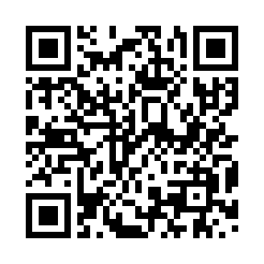
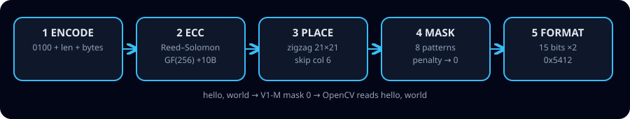
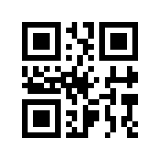

This repo builds a real, scannable QR code maker in about 325 lines of plain Python with zero third-party libraries — and proves every code with a real reader. In ten minutes you will understand encode → error-correction → placement → masking → format, reproduce the classic
hello, world code (21×21, mask 0), and see exactly how much damage and how big a logo it survives. Teachers, students, interview candidates, makers and product teams can copy the 30-second quick start below and be productive immediately.
QR Codes from Nothing
A verified, minimal implementation with live robustness benchmarks. 441 little squares hold words because 208 of them are a carefully coded polynomial, wrapped in finders a reader can find from any angle.
⚡ 30-second quick start
python3 qr_from_scratch.py "hello, world" out/hello.png python3 verify.py # real reader check — must say ALL VERIFY PASSED python3 benchmark.py # damage + logo + mask — live numbers🌱 Start beginner guide Take the 2-min quiz →
V1-M hello
V4-M 33×33Left: scan me — it reads hello, world. Right: 2-block interleaved V4. Both made by this repo, both decoded live.
🎬 Demo (GIF + video)
hello, world — winner is mask 0 (lowest penalty).<video> in markdown); click through to this page or YouTube for full video. To add your own: upload MP4 via a GitHub issue, or link a YouTube thumbnail.
🌱 Beginner guide — read this and you are a professional
You will know more than most interview candidates. No maths degree needed. Let's work this out in a step-by-step way to be sure we have the right answer.
A square of black/white cells (“modules”). Three big corner squares are finders. Everything else is data + helpers + bodyguards (error correction).
hello, world = 12 bytes: 104, 101, 108, 108, 111 … A computer stores letters as numbers (UTF-8). We just pack those numbers as bits.First 4 bits
0100 = “plain bytes next”. Next 8 bits = length (12). Then the 12 bytes. That's it. Let's work this out: 4 + 8 + 12×8 = 108 bits. Capacity V1-M = 16×8 = 128 bits. Leftover 20 bits → up to 4 zeros = “end”, pad to a full byte, then filler 236, 17, 236… to reach 16. Check: 14 letters need 4+8+112=124 ≤ 128 ✓; 15 letters need 132 > 128 ✗ → so V2.Receipts crumple. We add 10 check bytes (Reed–Solomon). Adding = XOR (so 3+7=4). Multiplying uses powers of two with a wrap (256→29). Divide the 16-byte polynomial by a fixed generator; remainder = check bytes. Rule of thumb: each broken byte costs 2 check bytes → 10 fix 5. That's why 5 damaged bytes read 20/20 and 6 read 0/20.
V1 = 21×21. Finders + borders + dotted timing lines + 1 always-black module + 2 format strips = 233 taken. Left 208 = 26 bytes. Snake up/down from bottom-right, 2 columns at a time, skip the timing column.
Big flat areas confuse readers. Try 8 flip-patterns, score each (runs, 2×2 blocks, finder-lookalikes = 40 pts, dark balance). Unmasked = 460. Checkerboard mask 0 = 319 → keep it. Reader knows which mask from the format strip.
15 bits: 2 for level (M=
00) + 3 for mask (000) + 10 check + XOR disguise. Written twice so one damaged copy still reads. Example M+mask0 → 0x5412.You did it. Save as PNG (tiny writer included), scan with your phone — it reads hello, world. The quiz below proves it. The rest of this page is the same story with exact numbers.
🔧 The 5 stages (exact)
0100 | len(8b) | dataTerminator ≤4 zeros, pad
EC 11.V1-M: 16B → 14 chars max.
GF(256), primitive
0x11D.16 ÷ generator → 10 check.
26 total divide evenly.
21×21, 233 fixed, 208 data.
Zigzag BR→, skip col 6.
Align + dark
(8,4V+9).8 formulas, 4 rules (3/3/40/10).
hello: 460 → 0:319, 1:469, 2:360, 3:478, 4:483, 5:437, 6:384, 7:403.15b = 2 EC + 3 mask + 10 BCH.
0x537 ÷, XOR 0x5412.M0=
0x5412 L0=0x77C4, ×2.🧪 Mask lab — click and see
Same data, 8 masks. Only data modules flip; finders never move. Lowest penalty wins (mask 0 here).

📊 Live results (not theory)
Damage — flip whole bytes, 20 trials each (V1-M, seed 0)
| broken bytes | 1 | 2 | 3 | 4 | 5 | 6 |
|---|---|---|---|---|---|---|
| read /20 | 20 | 20 | 20 | 20 | 20 | 0 |
Sharp threshold at 5 = ⌊10/2⌋. Each repair needs position + value.
Logo — white centre square until the reader quits
| level | small (hello V1/V2) | larger (URL V4–V6) | often quoted |
|---|---|---|---|
| L | 3.6% | 4.5% | 4% |
| M | 8.2% | 8.8% | 9% |
| Q | 7.8% | 15.2% | 14% |
| H | 10.2% | needs V7+ | 19% |
Bigger codes survive bigger relative logos (2+ blocks spread bursts; V1 has 1). Logo guidance must be version-conditioned — a publishable nuance.
Build
V4 average ~12 ms here (reference ~8 ms; CPU-dependent; mask trial dominates).
🎓 Interactive quiz — from scratch to pro
💡 What can you use this for? (user stories)
“I want to see Galois fields, not just hear about them.”
Run
verify.py, break one byte, watch it heal.Live 10-min demo: 441 squares → words → torn sticker still scans.
Quiz above = ready exit ticket.
Explain finder
1:1:3:1:1, mask penalty, why 10 EC fix 5 — you now beat most candidates.Offline labels, Wi-Fi cards, event badges. Zero deps = runs on a Raspberry Pi.
Auditable ~325 lines. No network, no blob. Know exactly what your QR contains.
Need V1–V6 URLs/text/TOTP? Copy one function. Need more? Extend tables to V40 (roadmap in README).
✨ Features
| Feature | Detail |
|---|---|
| Zero dependencies | Maker uses stdlib only (struct+zlib for PNG). Verify needs OpenCV. |
| Versions 1–6, L/M/Q/H, byte mode | URLs, text, Wi-Fi, TOTP. Smallest fitting version auto-picked. |
| Real error correction | GF(256) + Reed–Solomon + interleave (V4 = 2×32). |
| Correct masking | All 8 tried, 4-rule penalty, winner kept. Verified 460→319. |
| Spec format | 15-bit BCH + XOR, twice + dark module. Vectors 0x5412/0x77C4. |
| Live-proof | verify.py + benchmark.py + Docker. Nothing simulation-only. |
| Learnable | Beginner guide + mask lab + quiz on this page. |
❓ FAQ
Do I need the internet to make codes? No. Generation is offline. The reader check needs OpenCV installed, once.
Why does a torn code still scan? Check bytes let the reader solve for missing values — 2 check bytes per broken byte.
Which level for a logo? H survives biggest, but makes a bigger code. For small V1, keep logos tiny (see table). Test with your printer + phone.
Can I force version/mask? Yes: make_matrix("hi", "M", ver=2, mask=3).
Alphanumeric / V7+? Roadmap: pack 2 chars in 11 bits; add tables + 18-bit version info.
🌐 View this repo as a website (GitHub Pages)
You are looking at it. This file (preview.html) is a zero-build static site. Publish it in 1 minute:
1. Push this repo to GitHub 2. GitHub → Settings → Pages 3. Source: Deploy from branch → Branch: main, Folder: / (root) 4. Save → open https://<you>.github.io/<repo>/preview.html
Keep assets in docs/assets/ (GIF < 5 MB ✓ ours is ~9 KB). README links here; this page links back to the repo. No actions needed.